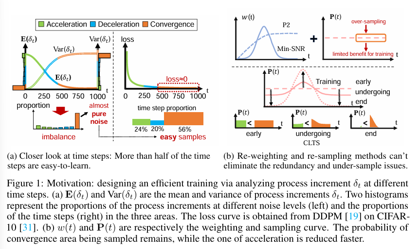

全文翻译
摘要
训练扩散模型一直是计算密集型任务。在本文中，我们介绍了一种新的扩散模型训练加速方法SpeeD，该方法基于对时间步长的深入研究。我们的关键发现是：i）根据过程增量，时间步长在经验上可分为加速区、减速区和收敛区。ii）这些时间步长是不平衡的，许多集中在收敛区。iii）集中的步骤对扩散训练的益处有限。为了解决这个问题，我们设计了一种非对称采样策略，该策略减少了来自收敛区的步骤的频率，同时增加了来自其他区域的步骤的采样概率。此外，我们提出了一种加权策略，以强调过程增量快速变化的时间步长的重要性。作为一种即插即用且与架构无关的方法，SpeeD在各种扩散架构、数据集和任务中始终实现3倍加速。值得注意的是，由于其简单的设计，我们的方法在最小化开销的情况下显著降低了扩散模型训练的成本。我们的研究使更多研究人员能够以更低的成本训练扩散模型。
1 引言
训练扩散模型通常让许多研究人员，尤其是学术界的研究人员难以负担。例如，DALL·E 2[40]需要40K A100 GPU天，而Sora[41]至少需要126K H100 GPU天。因此，加速扩散模型的训练对于更广泛的生成式人工智能和其他计算机视觉应用来说已变得迫切。
最近，一些针对扩散训练的加速方法专注于时间步长，主要采用重新加权和重新采样的方式：1) 基于启发式规则对时间步长进行重新加权。P2[8]和Min-SNR[15]根据不同时间步长的信噪比（SNR），使用单调和单峰加权策略。2) 对时间步长进行重新采样。Log-Normal[25]为扩散过程的中间时间步长分配高采样概率。CLTS[61]提出了一种基于课程学习的时间步长调度，通过插值将采样概率从均匀分布逐渐调整为高斯分布，以实现加速，如图1b所示。
|  |
|---|
| 图1：设计动机：通过分析不同时间步的过程增量$\delta_{t}$来设计高效训练方法。(a) $E(\delta_{t})$和$Var(\delta_{t})$分别为过程增量$\delta_{t}$的均值和方差。两个直方图分别表示不同噪声水平下过程增量的比例（左图）和三个区域中时间步的比例（右图）。损失曲线由DDPM[19]在CIFAR10[31]数据集上的实验获得。(b) $w(t)$和$P(t)$分别为加权曲线和采样曲线。收敛区域的采样概率保持不变，而加速区域的采样概率下降更快。 |
为了探究上述加速方法的本质，我们对时间步长进行了更深入的研究。扩散模型本质上在训练和推理阶段学习并估计时间步长t处的过程增量，记为$\delta_{t}:=x_{t+1}-x_{t}$。如图1a左侧所示，我们通过时间步长可视化了过程增量的均值和方差的变化。基于观察和理论分析（第2.2节），时间步长可分为三个区域：加速区、减速区和收敛区，因为均值和方差的变化最初加速，随后减速，最终收敛在一个狭窄的区间内。
人们很容易发现这三个区域的比例是不平衡的：收敛区有大量的时间步长，而其他区域的时间步长较少。另一个发现是，收敛区的过程增量几乎是相同的噪声，例如在DDPM中，分布几乎是$N(0,2I)$，其中I是单位矩阵。为了进一步探索这三个区域的特征，我们在图1a右侧可视化了训练损失曲线。收敛区的损失值远低于其他区域，这表明估计相同的噪声是容易的。
以前的加速工作已经取得了有希望的结果，但对时间步长的分析仍然相对不足。P2[8]和Min-SNR[15]是两种重新加权方法，其跨时间步长的加权曲线如图1b所示。它们采用时间步长的均匀采样，在扩散模型训练期间包含了太多来自收敛区的简单样本。
另一方面，大多数重新采样方法启发式地强调对中间时间步长的采样，但没有深入研究加速区和收敛区之间的差异。例如，CLTS[61]通过插值将采样分布从均匀分布逐渐变为高斯分布，如图1b所示。加速区的采样概率下降速度比收敛区快。加速区仍然采样不足，因此没有得到很好的学习。
受对时间步长深入研究的分析启发，我们提出了SpeeD，这是一种旨在提高扩散模型训练效率的新方法。核心思想如图2所示。为了减少冗余的训练成本，与均匀采样不同，我们设计了一种非对称采样策略，在每次迭代中抑制来自收敛区的时间步长的参与。同时，我们根据过程增量的变化率对时间步长进行加权，强调快速变化区间的重要性。
我们的方法具有以下特点：SpeeD与各种扩散模型训练方法兼容，即U-Net[47]和DiT[42]，只需进行最小的修改。在性能方面，SpeeD在相同的训练迭代次数下比基线和其他方法取得了显著的改进。在效率方面，SpeeD在各种任务和数据集上始终将扩散训练加速3倍。它有助于减轻扩散模型训练的沉重计算成本，使更多研究人员能够以可接受的费用训练模型。SpeeD的额外时间复杂度为$O(1)$，在FFHQ、MetFaces和ImageNet-1K等数据集上，仅需几秒即可减少数天的扩散模型训练时间。我们希望这项工作能为高效的扩散模型训练带来新的见解。
2 从时间步长加速扩散训练
在本节中，我们首先介绍扩散模型的预备知识，然后重点深入研究时间步长以及我们提出的SpeeD的关键设计。
2.1 扩散模型预备知识
我们的主要实现遵循DDPM[19,52]。给定数据$x_{0} \sim p(x_{0})$，前向过程是一个马尔可夫高斯过程，通过逐渐添加噪声来获得扰动序列$\{x_{1}, x_{2}, \dots, x_{T}\}$，
其中$I$是单位矩阵，$T$是时间步的总数，$q$和$\mathcal{N}$分别表示前向过程和由调度超参数$\{\bar{\beta}_{t}\}_{t \in [T]}$参数化的高斯分布。扰动样本通过$x_{t} = \sqrt{\bar{\alpha}_{t}} \cdot x_{0} + \sqrt{1-\bar{\alpha}_{t}} \cdot \epsilon$采样，其中$\epsilon \sim \mathcal{N}(0, I)$，$\alpha_{t} = 1 - \beta_{t}$且$\bar{\alpha}_{t} = \prod_{s=1}^{t}\alpha_{s}$。
对于扩散模型训练，前向过程按时间步$t$分为样本对和目标过程增量，定义为$\delta_{t} := x_{t+1} - x_{t}$。扩散模型期望从给定的时间步预测下一步。扩散模型的训练损失[19]是预测封闭形式的归一化噪声，突出显示了加权和采样模块的训练损失：
直观地说，训练神经网络$\epsilon_{\theta}$来预测在给定时间步$t$添加的归一化噪声$\epsilon$。前向过程中样本被采样的概率由概率测度$\mu_{t}$决定，而损失函数的权重由第$t$个时间步的$w_{t}$决定。
2.2 深入研究时间步长
在DDPM中，扩散模型学习在给定第$t$个时间步的前向过程中添加的噪声。该噪声表示为$\epsilon$，即公式1中的标签，它是给定时间步的归一化过程增量。为了更深入研究，我们关注过程增量$\delta_{t}$本身的性质，以研究扩散过程$x_{t} \to x_{t+1}$，而不是归一化的$\epsilon$。根据定理1和备注1，基于过程增量$\delta_{t}$的变化趋势，我们可以区分三个不同的区域：加速区、减速区和收敛区。详细讨论如下：
定理1（DDPM中的过程增量） 在DDPM的设定[19]中，线性调度超参数$\{\beta_{t}\}_{t \in [T]}$是一个等变序列，极端偏差$\Delta_{\beta} := \max_{t}\beta_{t} - \min_{t}\beta_{t}$，$T$是时间步的总数，我们有关于过程增量$\delta_{t} \sim \mathcal{N}(\phi_{t}, \Psi_{t})$的边界，其中$\phi_{t} := (\sqrt{\alpha_{t+1}} - 1)\sqrt{\bar{\alpha}_{t}}x_{0}$，$\Psi_{t} := [2 - \bar{\alpha}_{t}(1 + \alpha_{t+1})]I$，$I$是单位矩阵，如下所示：
备注1 整个扩散过程可以使用定理1的上下界来近似，我们将其可视化如图3所示。我们可以观察到扩散过程可以分为三个区域：加速区、减速区和收敛区。这些区域的两个边界点分别表示为$t_{a-d}$和$t_{d-c}$，其具体定义和性质概述如下。
$t_{a-d}$的定义 加速区和减速区之间的边界由参数变化曲线的拐点决定，如图3所示。该拐点表示过程增量变化最快的峰值。加速区和减速区之间的关键时间步$t_{a-d}$满足$t_{a-d} = \arg\max_{t}\partial_{t}\hat{\Psi}_{t}$，在我们的设定中$\beta_{t_{a-d}} = \sqrt{\Delta_{\beta}/T}$，其中$\partial_{t}\hat{\Psi}_{t} = 2(\beta_{0} + \Delta_{\beta}t/T)\exp\{-(\beta_{0} + \Delta_{\beta}t/2T)t\}$。
$t_{d-c}$的定义 当增量的方差在某个范围内时，该过程被认为处于收敛区。收敛区由幅度$r$确定，其中$1 - 1/r$是与最大方差的比率。根据定理1，收敛区被定义为比例因子的一个幅度减小（即$1 \times r$），我们将幅度的下界$\hat{r}_{t} := \exp\{(\beta_{0} + \Delta_{\beta}t/2T)t\}$用作2.4节中的阈值选择函数。当$\hat{r}_{t} > r$时，时间步$t$保证处于收敛区。
分析 在收敛区，$\delta_{t}$的变化趋于稳定，表明过程正在接近稳定状态。该区域在整个时间步中占比非常大。此外，该区域的训练损失在经验上较低，这导致在对训练益处有限的时间步上产生冗余的训练成本。在加速区，$\delta_{t}$的变化增加，表明变化迅速。相反，在减速区，$\delta_{t}$的变化减小，反映出过程的放缓。值得注意的是，在加速区和减速区之间的峰值附近，过程表现出最快的变化，这些时间步仅占很小的比例。此外，该区域的训练损失在经验上较高。问题在于，难学习的区域甚至被欠采样，需要更多的采样和训练努力。
结论 基于上述分析和观察，我们得出以下结论：
- 收敛区的样本对训练的益处有限，应抑制该区域时间步的采样。
- 应更多关注过程增量的快速变化区域，该区域难学习且对应的时间步比其他区域少。
2.3 SpeeD概述
基于上述观察和分析，我们提出了SpeeD，一种专为扩散模型设计的无损失训练加速新方法。如图2所示，SpeeD抑制来自收敛区的琐碎时间步，并对加速区和减速区之间的快速变化区间进行加权。相应地，提出了两个主要模块：非对称采样和变化感知加权。非对称采样使用两步阶跃函数分别抑制和增加对应琐碎和有益时间步的采样概率。变化感知加权基于过程增量$\partial_{t}\Psi(t)$的变化率。
2.4 非对称采样
SpeeD采用时间步采样概率$P(t)$作为公式3中的阶跃函数来构造公式1中的损失。我们首先将$\tau$定义为$P(t)$中的步长阈值，预定义的边界$\tau$表示时间步被抑制的区域。采样概率在$t < \tau$时是$t > \tau$时的$k$倍，而不是均匀采样$U(t) = 1/T$，
阈值选择$\tau$ 根据定理1，给定幅度$r$，$\tau$应满足$\hat{r}(\tau) > r$，以确保$\tau > t_{d-c}$，其中被抑制的时间步都是收敛区的时间步。为了最大化被抑制时间步的数量，我们设置$\tau \leftarrow \sqrt{2T\log r / \Delta_{\beta} + T^{2}\beta_{0}^{2}/\Delta_{\beta}^{2}} - T\beta_{0}/\Delta_{\beta}$。
2.5 变化感知加权
根据定理1，过程增量的更快变化意味着对应噪声水平的样本更少，这导致加速区和减速区的欠采样。采用变化感知加权来缓解欠采样问题。权重$\{w_{t}\}_{t \in [T]}$基于方差随时间的梯度分配，其中我们使用定理1中的近似$\partial_{t}\hat{\Psi}_{t}$。
由于原始梯度$\partial_{t}\hat{\Psi}_{t}$的尺度较小，实际上不适合作为权重，因此将$\partial_{t}\hat{\Psi}_{t}$重新缩放到区间$[1-\lambda, \lambda]$，其中$\min\{1, \max_{t}\partial_{t}\hat{\Psi}_{t}\} \to \lambda$且$\max\{0, \min_{t}\partial_{t}\hat{\Psi}_{t}\} \to 1-\lambda$，对称上限$\lambda \in [0.5, 1]$。$\lambda$调节加权函数的曲率，更高的$\lambda$导致不同时间步之间的权重差异更明显。
3 实验
我们首先在3.1节描述主要实验设置，包括基准数据集、网络架构、训练细节和评估协议。在3.2节中，我们展示了关于性能和效率的主要结果。之后，在3.5节和3.3节中，我们对每个设计模块的有效性进行消融，并在各种扩散任务和设置中评估SpeeD的泛化能力。最后，我们在3.4节中研究了我们的方法与其他最新方法的兼容性，并在3.6节中展示了可视化结果。
3.1 实现细节
数据集：我们主要在以下数据集上研究我们方法的有效性：MetFaces[26]和FFHQ[27]用于训练无条件图像生成，CIFAR-10[31]和ImageNet-1K[9]用于训练条件图像生成，MS-COCO[33]用于评估我们方法在文本到图像任务中的泛化能力。这些数据集的更多细节可以在附录A中找到。
网络架构：U-Net[47]和DiT[42]是扩散模型领域的两种著名架构。我们在这两种架构及其变体上实现了我们的方法。默认情况下，我们遵循与基线相同的超参数。架构细节的更多信息可以在附录A.1中找到。
训练细节：我们使用AdamW[29,36]训练所有模型，学习率恒定为1e-4。我们将训练的最大步数设置为1000，并使用线性方差。除非另有说明，所有图像都进行水平翻转变换。遵循生成建模文献中的常见做法，使用网络权重的指数移动平均（EMA）[13]，衰减率为0.9999。结果使用EMA模型报告。详细信息可以在表6中找到。
评估协议：在推理中，我们默认生成10K图像。Fréchet Inception Distance（FID）用于评估生成图像的保真度和覆盖范围。
3.2 与其他策略的比较
性能比较：在我们进行比较之前，我们首先介绍我们的基线，即DiT-XL/2，这是DiT[42]中介绍的一种强大的图像生成骨干网络。我们遵循DiT的超参数设置，并分别在MetFaces[26]和FFHQ[27]上训练DiT-XL/2。我们将我们的方法与两种重新加权方法：P2[8]和Min-SNR[15]，以及两种重新采样方法：Log-Normal[25]和CLTS[61]进行比较。在评估中，我们使用10K生成图像来计算FID[17]进行比较。为了进行详细比较，所有方法都训练了50K次迭代，我们报告每10K次迭代的FID分数。
如表1所示，与DiT-XL/2、重新加权和重新采样方法相比，我们的方法获得了最佳的FID结果。具体来说，在50K次迭代时，与其他方法相比，我们在MetFaces和FFHQ上分别至少降低了2.3和2.6个FID分数。另一个有趣的发现是，重新加权方法在训练开始时FID降低非常缓慢，即从10K到20K次迭代。这与我们的分析非常一致：重新加权方法涉及大量来自收敛区的步骤。基于实验结果，来自收敛区的时间步确实对扩散训练贡献有限。
效率比较：除了性能比较之外，我们还展示了我们的SpeeD的加速结果。这自然引出了一个问题：如何计算加速？在这里，我们遵循以前的扩散加速方法[12]和其他高效训练论文[43,61]：可视化FID-迭代曲线并报告估计的最高加速比。我们主要在图4中与DiT-XL/2、一种重新加权方法Min-SNR[8]和一种重新采样方法CLTS[61]进行比较。在相同的训练迭代次数下，我们的方法比其他方法取得了显著更好的FID分数。值得注意的是，SpeeD将Min-SNR和CLTS分别加速了2.7倍和2.6倍。更多与其他方法的比较可以在附录B中找到。
对于与基线（即DiT-XL/2）的比较，考虑到50K次迭代可能太短而无法收敛，我们将训练迭代次数从50K扩展到200K。在长期训练中，我们在不降低性能的情况下将DiT-XL/2加速了4倍。这表明我们提出的方法具有很强的效率。最重要的是，我们可以用很少的开销节省3~5倍的总体训练成本。例如，我们为DiT-XL/2节省了48小时（在8个A6000 Nvidia GPU上训练得到的结果）的训练时间，而开销可以忽略不计。
3.3 泛化评估
跨架构鲁棒性评估：扩散模型中主要有两种架构：U-Net[47]和DiT[42]。SpeeD与特定的模型架构无关，因此它是一种与模型无关的方法。我们分别在MetFaces、FFHQ和ImageNet-1K上用DiT-XL/2和U-Net实现了我们的方法。我们默认在MetFaces和FFHQ上训练模型50K次迭代，在ImageNet-1K上训练400K次迭代。为了确保公平比较，我们保持所有超参数相同，并报告50K次迭代时的FID分数。如表2所示，SpeeD在所有设置下始终取得显著更高的性能，这表明我们的方法对不同的架构和数据集具有很强的通用性。
跨调度鲁棒性评估：在扩散过程中，有各种时间步调度，包括线性[19]、二次和余弦[39]调度。我们验证了SpeeD在这些调度中的鲁棒性。我们报告FID和Inception Score（IS）[50]分数作为比较指标。如表3所示，SpeeD在线性、二次和余弦调度上的FID和IS都取得了显著改进。这表明SpeeD在各种调度中具有很强的通用性。
跨任务鲁棒性评估：我们将SpeeD应用于文本到图像任务，以评估我们方法的通用性。对于文本到图像生成，我们首先引入CLIP[44]来提取MS-COCO[33]数据集的文本嵌入。然后，使用DiT-XL/2训练一个文本到图像模型作为我们的基线。遵循先前的工作[49]，MS-COCO验证集上的FID分数和CLIP分数是用于定量分析的评估指标。如表4所示，我们获得了比基线更好的FID和CLIP分数。
3.4 与其他加速方法的兼容性
到目前为止，我们评估了我们提出的方法的有效性和泛化性：SpeeD是一种与任务无关和与架构无关的扩散加速方法。SpeeD与其他加速技术兼容吗？为了研究这一点，我们将我们的方法与两种最近提出的算法结合使用：掩蔽扩散变压器（MDT）[12]和快速扩散模型（FDM）[60]。
MDT + SpeeD：MDT[12]提出了一种掩蔽扩散变压器方法，该方法在潜在空间中应用掩蔽方案，以明确增强扩散概率模型的上下文学习能力。MDT可以将扩散训练加速10倍。他们用DiT-S/2评估了他们的MDT。我们只是在他们的MDT上注入我们的SpeeD，并在图5a中报告FID-迭代曲线进行比较。所有结果都是在ImageNet-1K数据集上获得的。我们的方法可以将MDT至少进一步加速4倍，这表明SpeeD具有良好的兼容性。
FDM + SpeeD：快速扩散模型[60]是一种扩散过程加速方法，其灵感来自解决参数空间中优化问题的经典动量方法。通过将动量集成到扩散过程中，它以更少的训练成本实现了与EDM[25]相似的性能。基于官方实现，我们在32×32图像的CIFAR10上比较了EDM、FDM和FDM + SpeeD。FDM将EDM加速了约1.6倍。同时，SpeeD可以进一步降低约1.6倍的总体训练成本。
3.5 消融实验
我们进行了广泛的消融研究，以说明SpeeD的特性。消融研究中的实验默认在FFHQ数据集和U-Net模型上进行。我们消融了我们设计的组件：非对称采样（缩写为asymmetric）和变化感知加权（缩写为CAW），非对称采样中的抑制强度k（在公式3中定义）和加权中的对称上限λ（在2.5节中）。
评估SpeeD的组件：我们的方法包括两种策略：非对称采样和变化感知加权。我们用“asymmetric”和“CAW”表示这两种策略。我们消融了SpeeD中的每个组件。如表5a所示，结合我们提出的策略取得了最佳结果。单独使用加权和采样策略分别将基线提高了0.6和1.5个FID分数，这表明过滤掉收敛区的大多数样本对训练更有益。
评估抑制强度k：为了优先训练关键时间步，非对称采样关注收敛区之外的时间步。这些时间步的概率是收敛区时间步的k倍。更大的抑制强度k意味着不同时间步区域之间的训练差距更大。我们评估了从1到25的不同抑制强度k，并在表5b中报告了FID分数。我们观察到k=5时取得了最佳性能。巨大的抑制强度会严重降低FID分数，这意味着它极大地损害了数据建模的多样性。这意味着收敛区的样本尽管非常接近纯噪声，但仍然包含一些有用的信息。极端地完全丢弃这些样本会导致加速性能的下降。
评估对称上限λ：对称上限λ是调节加权函数曲率的超参数。λ设置在区间[0.5,1]中。重新缩放的权重区间的中点固定为0.5。对称上限λ是区间的右边界，左边界是1−λ。更高的λ导致更大的权重区间和不同时间步之间的权重差异更明显。在表5c中，设置λ≤0.8比基线获得了更高的FID分数性能，这表明SpeeD对对称上限λ相对鲁棒。进一步增加λ会导致性能下降。这意味着加权应该适度。
3.6 可视化
SpeeD和DiT-XL/2模型在MetFaces和FFHQ数据集上的可视化比较清楚地证明了SpeeD的优越性。如图6所示，与DiT-XL/2相比，SpeeD仅在20K或30K次训练迭代时就取得了显著更好的视觉质量。这突出表明，SpeeD比基线方法更快地达到高质量结果，使其成为训练扩散模型的更高效和有效的方法。
4 相关工作
我们讨论了与扩散模型及其训练加速相关的工作。最相关的工作如下，关于跨模态和视频生成的更多内容见附录C。
扩散模型
扩散模型已成为生成任务中的主流方法[7,21,49,56]，其性能优于包括GAN[4,22,68]、VAE[30]、基于流的模型[10]等其他生成方法。这些方法[19,25,53]基于非平衡热力学[23,52]，其中生成过程被建模为反向扩散过程，从噪声分布中逐步构造样本[52]。以往工作专注于提升扩散模型的生成质量以及在视觉生成中与用户需求的对齐。为了生成高分辨率图像，潜在扩散模型（LDM）[46,49]在潜在空间而非像素空间中执行扩散过程，利用VAE作为编码器和解码器来处理潜在表示。
扩散模型的加速
为降低计算成本，以往工作从训练和推理两方面对扩散模型进行加速。对于训练加速，最早的工作[8,15]通过对均方误差（MSE）损失的每个时间步分配不同权重来提升学习效率。另一类训练加速方法则从不同角度出发，如网络架构[48,58]和扩散算法[25,60]。最近，掩蔽建模扩散模型[12,66]被提出，通过在掩蔽标记上执行重建任务来训练扩散模型。SpeeD是一种专门为扩散模型训练设计的通用方法，与这些方法具有良好的兼容性。在另一加速领域中，由于扩散模型的推理速度较慢，许多工作专注于提升采样速度。推理缓慢是因为扩散模型需逐步将噪声转换为目标分布，因此提出了通过使用更少反向步骤同时保持样本质量来加速的方法，包括DDIM[53]、Analytic-DPM[1]和DPM-Solver[37]。
条件生成
为了更好地利用各种条件（如图像风格、文本提示和笔触）控制生成过程，无分类器引导（CFG）提出了一种与扩散模型结合的引导策略，平衡样本质量和提示对齐。ControlNet[65]重用源模型的大规模预训练层来构建深度强编码器，以学习特定条件。最近，受益于图像生成领域中扩散模型的发展，视频生成[32,38]也变得流行起来。